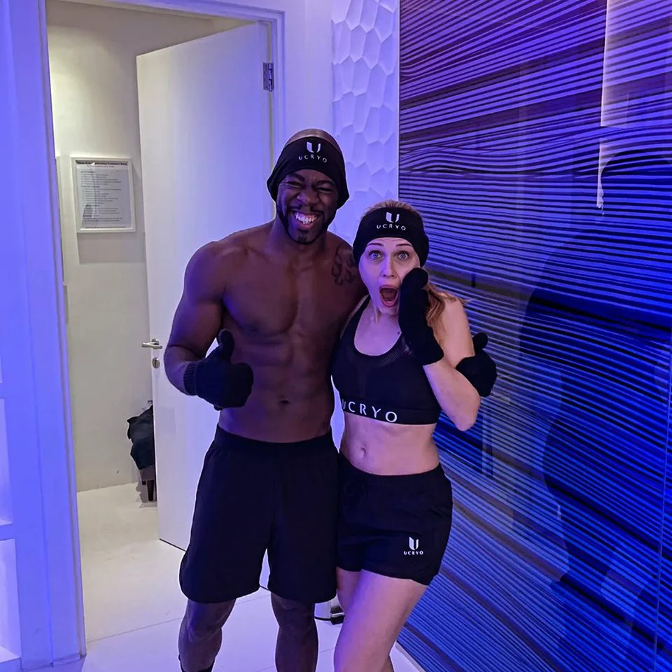
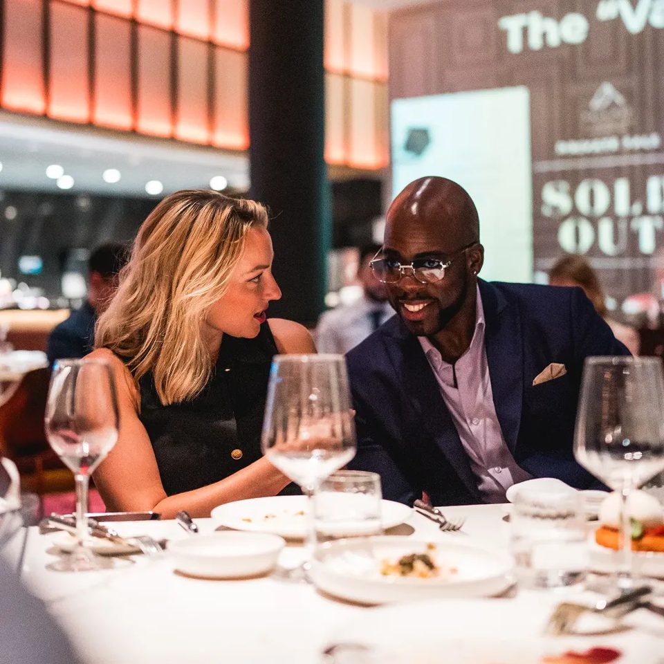
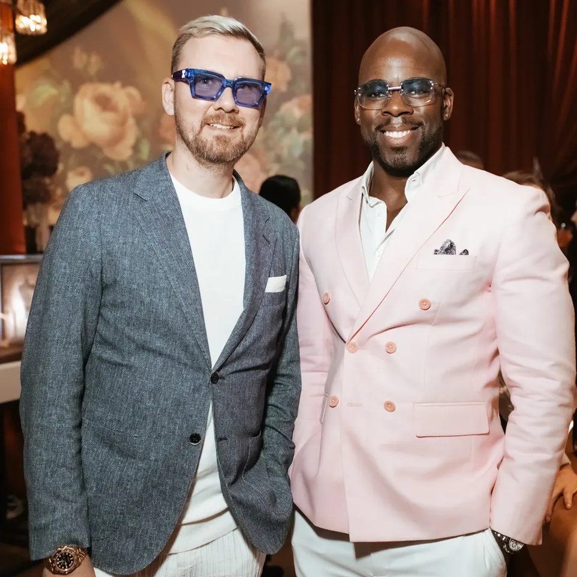
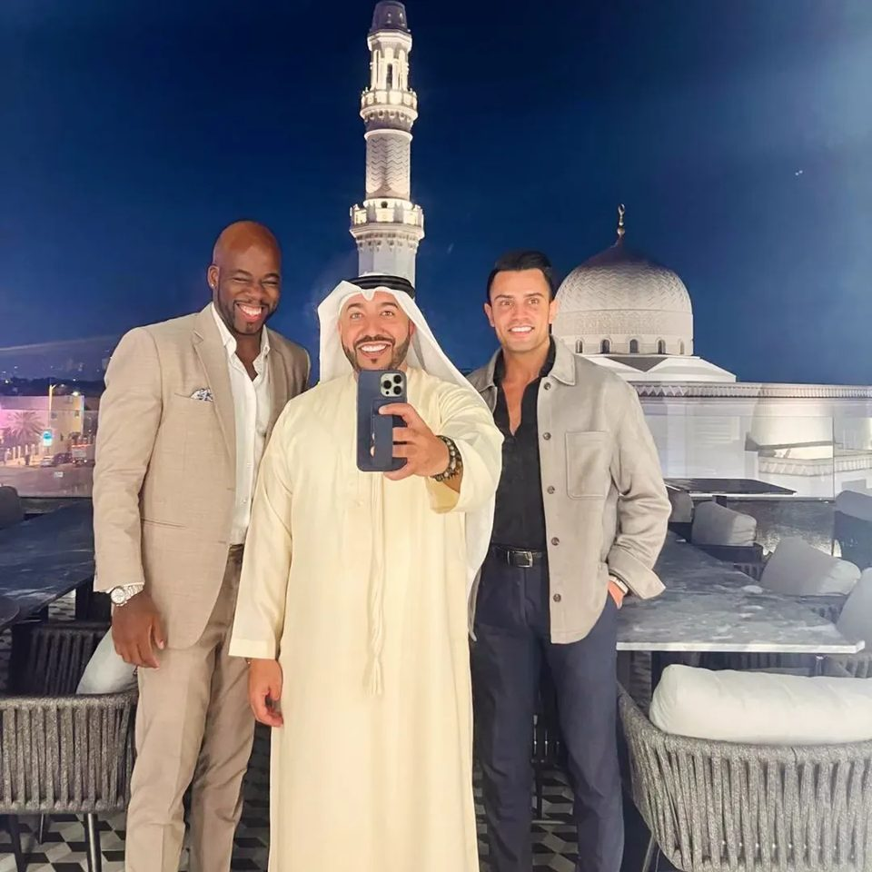

Strategy for 8-figure founders · United Arab Emirates
Operational sovereignty
is designed,
not hoped for.
I help UAE founders turning over 8 figures build a company that runs without them, by fixing the system and the mindset behind it.
25.2048° N · 55.2708° E
Thought · scroll to build
What is Performance Architecture?
Every business is a building.
Every founder is its ground.
An architect doesn’t decorate. He makes sure the structure carries its load, floor after floor, long after he leaves the site. OWO does the same for companies and the careers of the people who run them. Climb the tower.
The method
Three load-bearing walls. One structure.
Most advisors fix the system or coach the founder. We treat them as one building: when one wall moves, the whole structure shifts.
Self-diagnostic · 30 seconds
The Sovereignty Index
Move the three dials honestly. The index shows how much of your company runs on structure, and how much still runs on you.
The campaign · Now open
100 Dubai founders.
30 days. One move.
One online sit-down to pinpoint where your advantage over the competition is biggest, and turn it into a move you apply the next morning.
Enter DXB100 →Who is OWO
A high-performance business advisor who sits with the founder, not above them.
More than ten thousand hours alongside entrepreneurs and over two decades in advisory. No standardised western playbooks: every engagement starts from the business as it actually is, and ends with something you can act on.
In their words
“[Verified client quote — pulled from LinkedIn recommendations]”
“[Verified client quote — the one move and what it changed]”
Built, lived.
@theowo on Instagram →



From the Journal
Reach out
Ready to build
what outlasts you?
Engagements are limited and screened personally. Tell us where the business stands.
owo@theowo.com
+971 58 583 9941
Dubai, United Arab Emirates